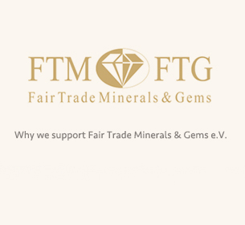

我們是一家年輕的企業與崇高的理想和具有挑戰性的願景。我們希望人類敏感，刺激他們使用的母親地球的資源。岩石和礦物吸引人類只要我們能記住。
即使在古代岩石的自愈能力是已知的，現在通過大量的研究證明。與此同時，寶石的質量保持不變了數百萬年，違背了我們的飲用水質量。岩石激勵我們在我們的日常工作。
因此，我們非常高興，我們的願景， 健康和生命的水可以通過珍貴的石頭得以實現，從而導致寶石水變得越來越流行。
非營利協會“公平貿易礦產和寶石電子伏特”，這是發起和最有名的作家和水晶癒合專家邁克爾GIENGER共同創辦，旨在為公平貿易的高目標，社會和生態項目的推進。
這是重新定義了正在使用的岩石和礦物的所有人類的共存。因此，它是一種享受，讓我們回到我們的盈利的一部分，岩石的源極（S），以支持這一共存。
公平貿易礦產和寶石的是，我們的捐款都按照我們的想法邁向欣賞並存使用的唯一保證 。
VitaJuwel®寶石能量棒，像您一樣，在世界上是獨
一無二的。
有了它的陪伴，在家中您就能享受清 新純淨的寶石能量水！
公平交易下
零衝突的寶石
所生產
歐盟國家內
製造
無鉛
波西米亞
玻璃
德國境內
阿爾卑斯山區 VitaJuwel® 玻璃藝術家設計
水質活化
結果通過
實驗室驗證
通過醫生與
另類療法治療師
測試
全世界多國
專利製程